GENERALES
Son guerreros de alto rango pertenecientes al ejército de Ashina. Aparecen desde las primeras zonas del juego y destacan por su resistencia, dominio de la espada y capacidad para dirigir a sus tropas [47][48].
Variantes y ubicaciones
- Líder Shigenori Yamauchi: Embalse de Ashina.
- General Naomori Kawarada: Alrededores de Ashina, cerca del Templo Desolado.
- General Tenzen Yamauchi: Alrededores de Ashina, después del primer Ogro Encadenado.
- General Kuranosuke Matsumoto: Castillo de Ashina, en las escaleras principales.
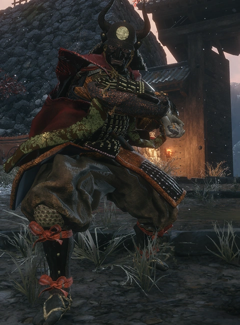
OGROS ENCADENADOS
Son criaturas de gran tamaño y fuerza descomunal. Sus movimientos son agresivos y pueden causar muchísimo daño mediante patadas, golpes y ataques de agarre. Además, son especialmente vulnerables al fuego [47][48].
Variantes y ubicaciones
- Ogro Encadenado de los Alrededores de Ashina: Al pie de la escalera que conduce al Castillo de Ashina.
- Ogro Encadenado del Castillo de Ashina: En los alrededores del castillo, durante la invasión del Ministerio del Interior.
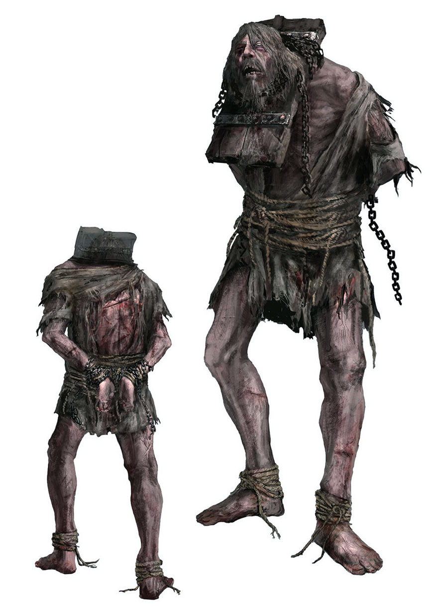
GUERREROS BORRACHOS
Son enemigos corpulentos que utilizan espadas curvas y ataques de gran alcance. Suelen beber sake para después escupir líquidos inflamables o venenosos, lo que convierte sus enfrentamientos en combates peligrosos [47][48].
Variantes y ubicaciones
- Juzo el Borracho: Hacienda Hirata, durante el recuerdo.
- Tokujiro el Glotón: Bosque Oculto, en las Profundidades de Ashina.
- Shigekichi de la Guardia Roja: Alrededores de Ashina, durante la invasión del Ministerio del Interior.
- Juzo el Borracho (Purificación): Hacienda Hirata, en el recuerdo alternativo de Purificación.
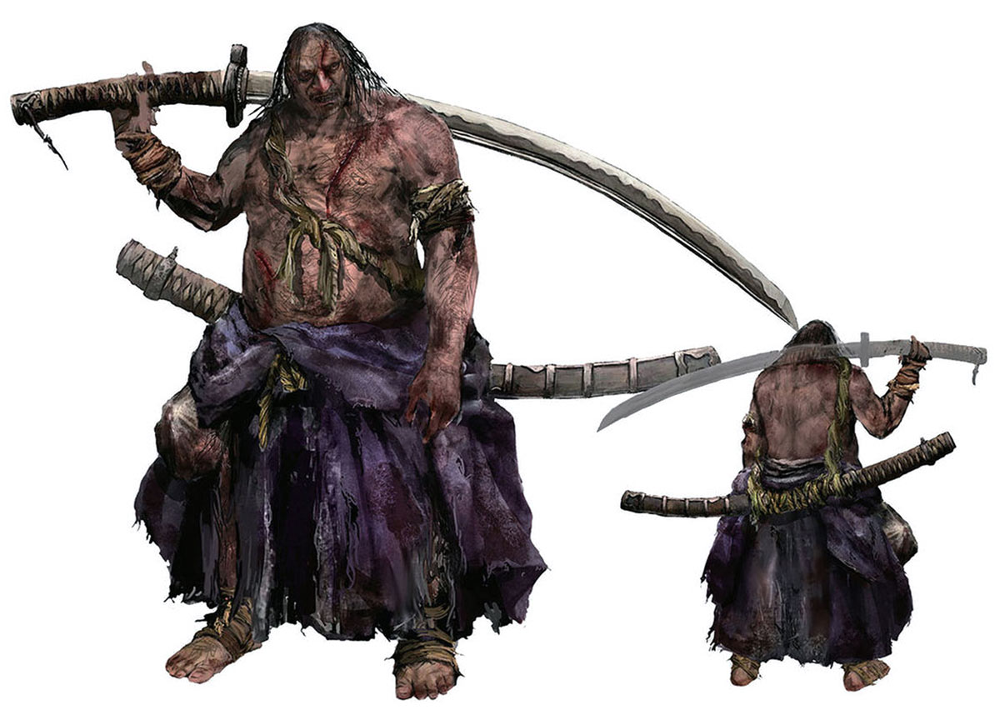
TOROS LLAMEANTES
Son animales utilizados como armas de guerra. Sus cuernos están cubiertos de fuego y sus embestidas pueden causar un daño considerable. Su gran velocidad y agresividad obligan a Sekiro a mantenerse en constante movimiento [47][48].
Variantes y ubicaciones
- Toro Llameante: Castillo de Ashina, en la zona de la puerta principal.
- Toro Cerezo del Manantial: Palacio del Manantial, cerca de la zona de los edificios del palacio.
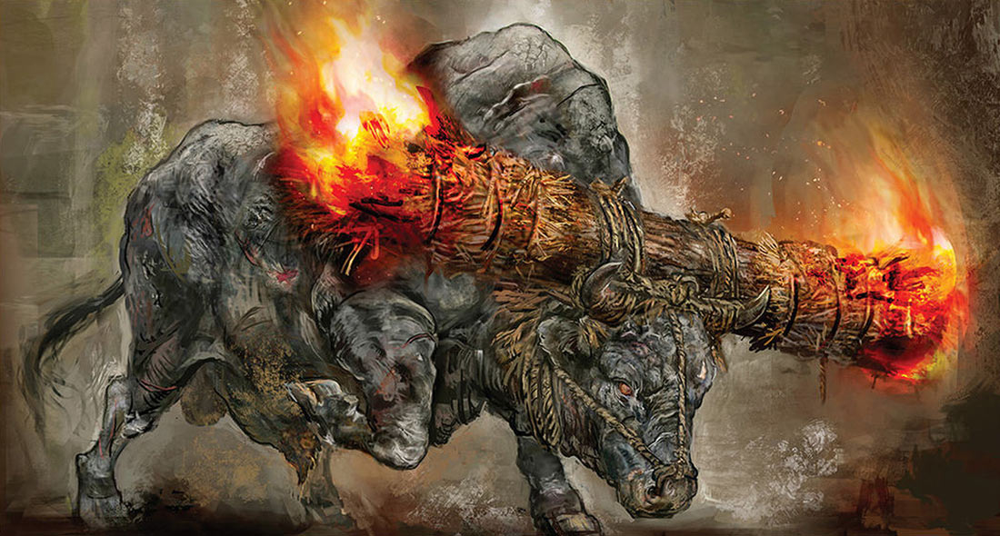
SIETE LANZAS DE ASHINA
Son guerreros de élite que pertenecen a las fuerzas de Isshin Ashina. Se especializan en el manejo de lanzas y poseen ataques de gran alcance, capaces de poner en serios aprietos a Sekiro [47][48].
Variantes y ubicaciones
- Shikibu Toshikatsu Yamauchi: Embalse de Ashina, cerca de la Torre de la Luna.
- Shume Masaji Oniwa: Embalse de Ashina, durante la invasión del Ministerio del Interior.
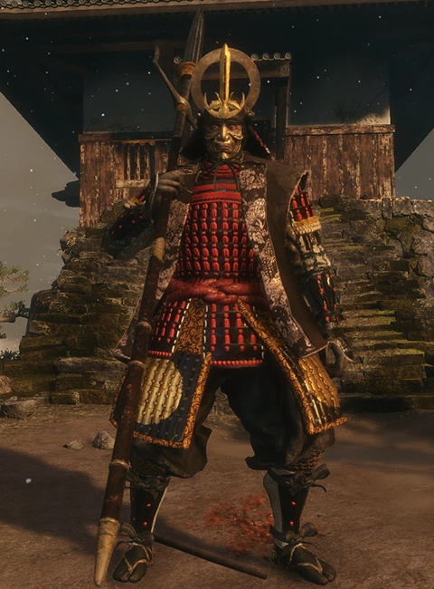
SOMBRAS SOLITARIAS
Forman parte de una élite de ninjas conocidos por su velocidad, agilidad y técnicas de combate. Utilizan patadas, espadas y otras habilidades que dificultan los enfrentamientos a corta distancia [47][48].
Variantes y ubicaciones
- Sombra Solitaria Espada Larga: Embalse de Ashina, en el pozo donde comienza la aventura.
- Sombra Solitaria Vil: Castillo de Ashina, en el Dojo Ashina.
- Sombra Solitaria Masanaga el Lancero: Santuario de la Gran Serpiente, en los Alrededores de Ashina.
- Masanaga el Lancero (Purificación): Hacienda Hirata, durante el recuerdo alternativo.
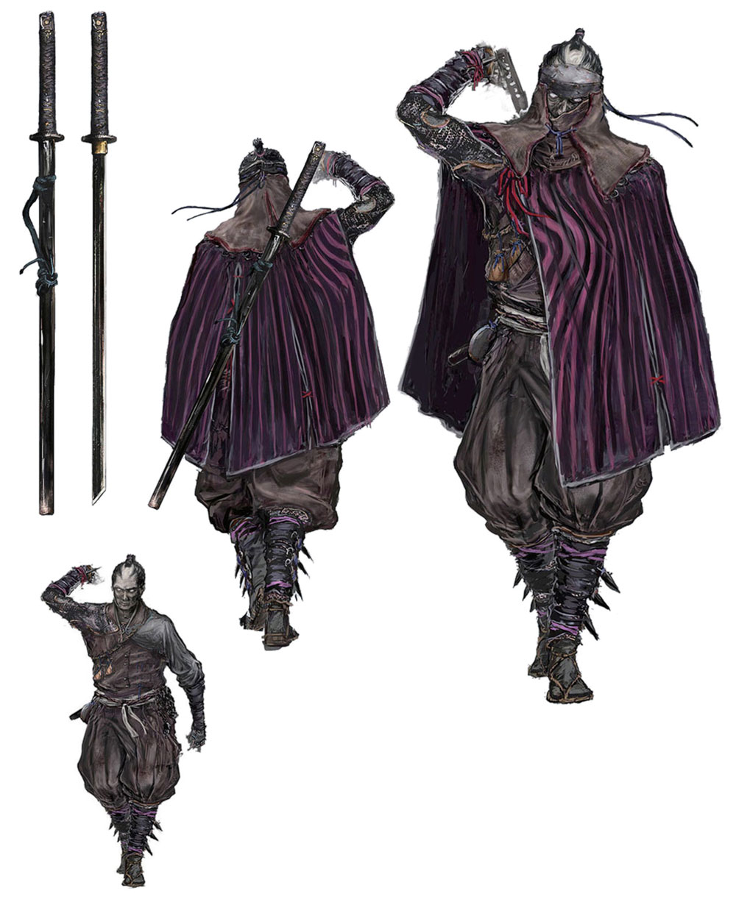
ÉLITE DE ASHINA
Son samuráis entrenados en el estilo de combate de Ashina, especialmente en el iaijutsu, una técnica que permite desenvainar y atacar con una velocidad extraordinaria. Sus golpes son precisos y muy peligrosos [47][48].
Variantes y ubicaciones
- Élite de Ashina - Jinsuke Saze: Castillo de Ashina, en el Dojo Ashina.
- Élite de Ashina - Ujinari Mizuo: Debajo del Castillo de Ashina, en una zona subterránea.
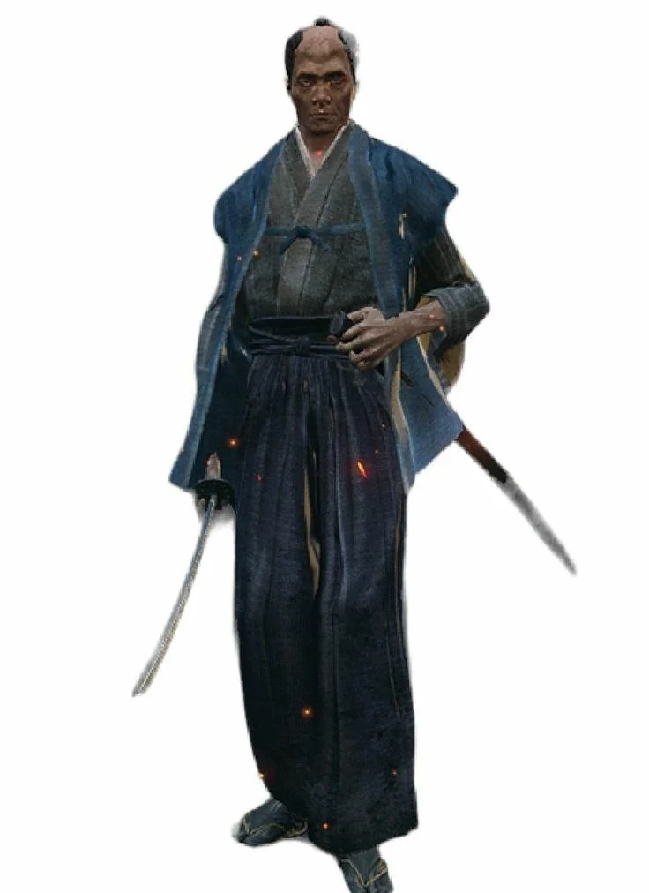
CIEMPIÉS PATAS LARGAS
Son extraños monjes que habitan en las montañas y lugares apartados. Se caracterizan por sus extremidades alargadas y sus rápidos ataques consecutivos, que exigen precisión al momento de desviar sus golpes [47][48].
Variantes y ubicaciones
- Ciempiés Patas Largas Sen'un: Templo Senpo, en el templo cercano al Ídolo del Escultor Salón Principal.
- Ciempiés Patas Largas Jirafa: Valle Sumergido, dentro del Fuerte del Cañón.
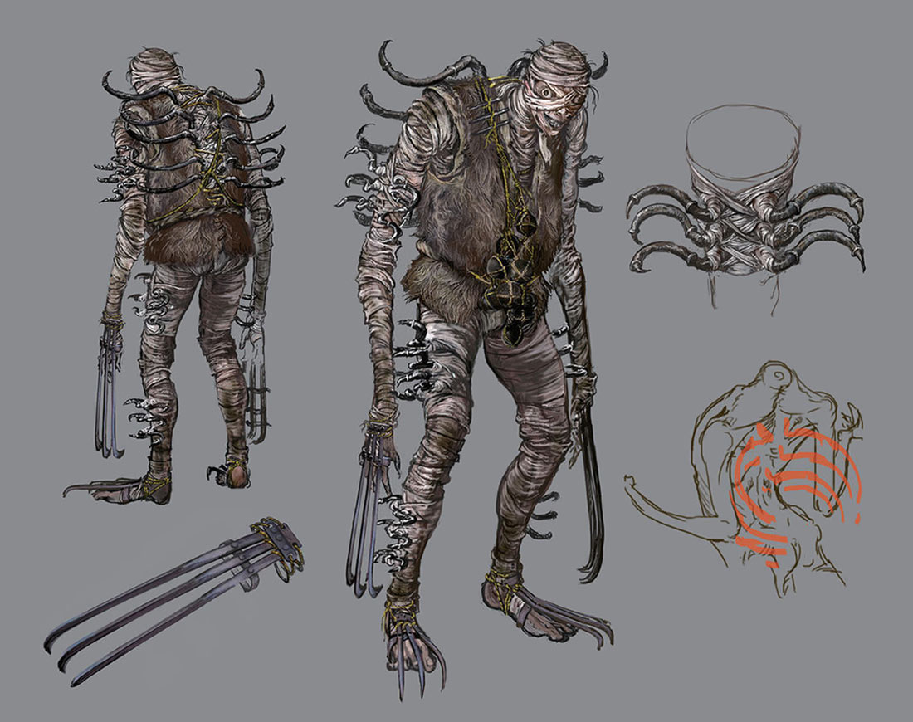
OJOS DE LA SERPIENTE
Son combatientes que utilizan armas de fuego de gran potencia y alcance. Sus ataques son precisos y pueden interrumpir los movimientos de Sekiro, por lo que es necesario estudiar sus patrones de combate [47][48].
Variantes y ubicaciones
- Shirafuji, Ojos de la Serpiente: Valle Sumergido, cerca de la entrada al Fuerte del Cañón.
- Shirahagi, Ojos de la Serpiente: Profundidades de Ashina, en la zona del Estanque de Veneno.
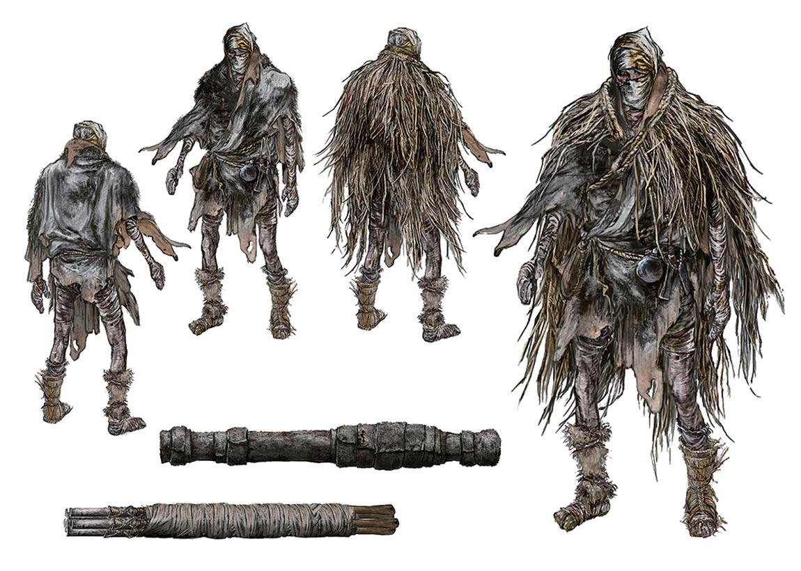
ENEMIGOS ÚNICOS
En el mundo de Sekiro existen minijefes que no pertenecen a una categoría de enemigos convencional. Cada uno posee características, habilidades y estilos de combate particulares [47][48].
Enemigos y ubicaciones
- Guerrero con Armadura: Templo Senpo, en el puente que conduce al Templo Shugendo.
- Cazador Shinobi Einshin de Misen: Hacienda Hirata, durante el recuerdo de la invasión.
- O'Rin del Agua: Aldea Mibu, en el camino que conduce al molino de agua.
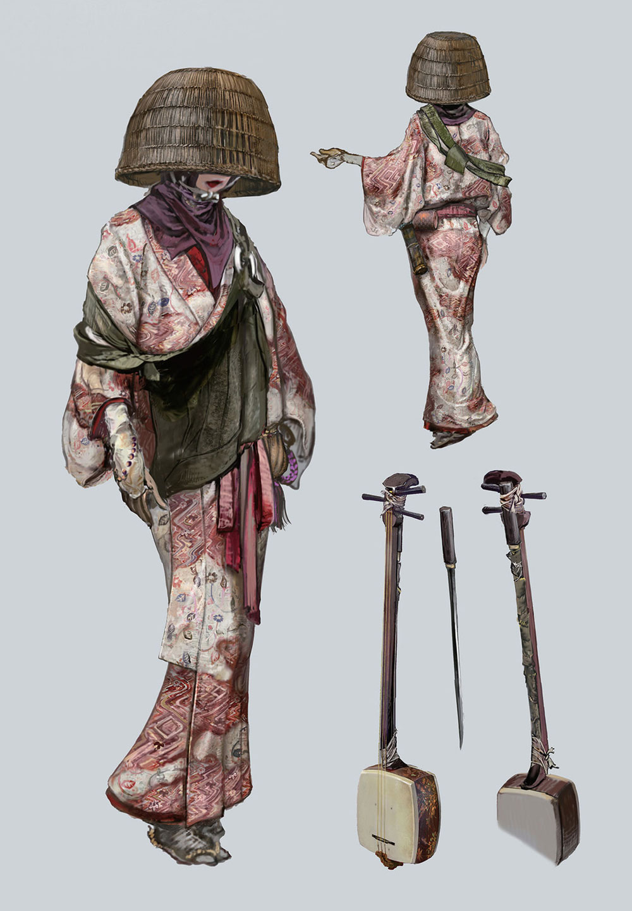
APARICIONES
Son criaturas sobrenaturales vinculadas al mundo espiritual. Sus ataques pueden provocar el estado de Terror, que al acumularse por completo causa la muerte de Sekiro. El Confeti Divino permite enfrentarlas con mayor eficacia, mientras que el Agente Pacificador ayuda a reducir la acumulación de Terror [48][49][50].
Tipos y ubicaciones
- Decapitados: Aparecen en diferentes zonas, como los Alrededores de Ashina, el Bosque Oculto, el Valle Sumergido, el Castillo de Ashina, las Profundidades de Ashina y el Palacio del Manantial.
- Guerreros Shichimen: Se encuentran en la Mazmorra Abandonada, las Profundidades de Ashina y el Palacio del Manantial.
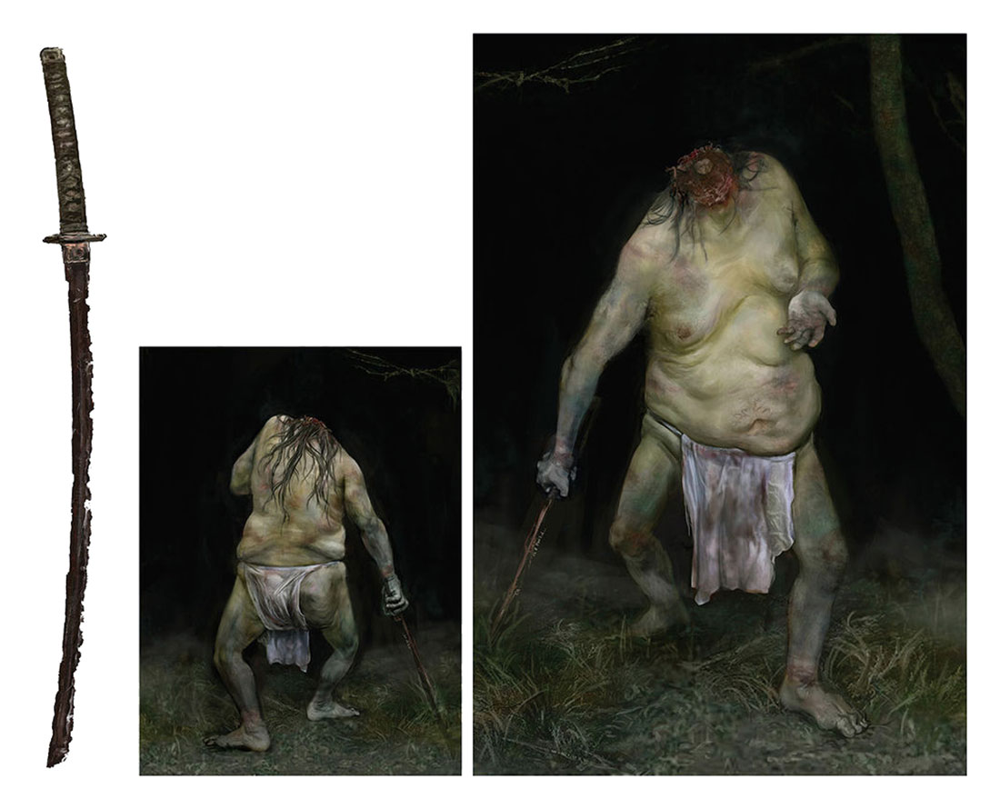